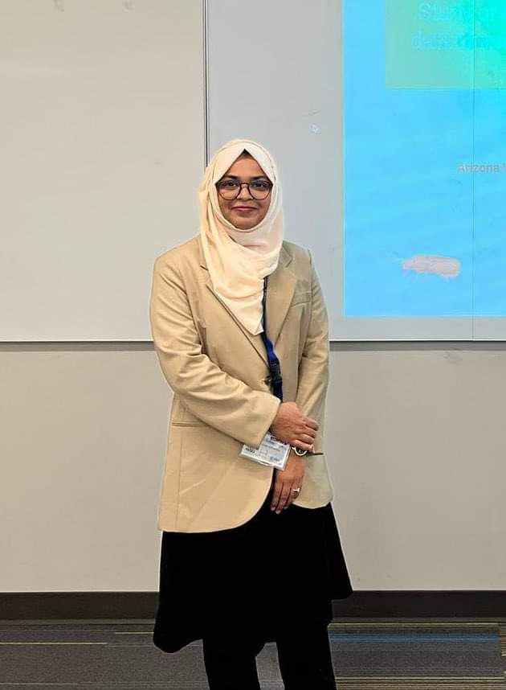

Kamrun’s research interests lie in computational mathematics, optimization, matrix and tensor methods, numerical analysis, and data-driven modeling. Her work focuses on developing algorithms for low-rank matrix factorization, online optimization, and randomized tensor decomposition. Her earlier research explored data-driven mathematical models for flour beetles and broader ecological systems.
Alongside her research, she serves as a Graduate Teaching Associate at Arizona State University and is actively involved in student leadership, including leadership roles in the Society for Industrial and Applied Mathematics (SIAM) and Association for Women in Mathematics (AWM) student chapters.
Outside of academia, she enjoys crafting, traveling, and reading thriller novels.